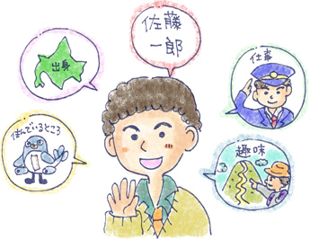

25 : 自己紹介をスムーズに♪
・自己紹介がうまくできますか？

前回は初対面が苦手な原因には、「自己紹介」、「きっかけ作り」、「考え方」
を挙げました。
今回はそのうち自己紹介の方法
について解説します！
もう20年近く昔の話ですが、
小学校のころに
「自己紹介カード」
というのが流行ったのを覚えています。
ハ○ーキティ、とか○○○○ケロッピーなどの
キャラクターのカードで、「ニックネーム」とか、
「すきなもの」「きらいなもの」などを書いて
女子に渡した記憶があります。
まぁ、そんな思い出話は置いておいて…
みなさんは、1分間で自分のことを相手に自己紹介できますか？
いきなり自己紹介と言われても、その内容は漠然としていて
実際何を話していいか戸惑ったことも多いかと思います。
・自己紹介の事前準備が必須！
しかし、第一印象はその後の運命を左右するぐらい大事です。
もし第一印象で失敗したらその後の人間関係が続かないわけですから、
仕事や恋愛で圧倒的に不利になってしまいます。
そのため、初対面の力をつけることはコミュニケーションにおいて
絶対条件と言っても過言ではありません。
では、どうやったら自己紹介をスムーズに行えるでしょうか？
それは事前に準備をしておくこと！
これにつきます。
当たり前のことですができていない方がほとんどです！！
人間関係は第一印象でかなりの部分で
決まってしまうことがあります。
しっかりと自己紹介できるようになると
その後の展開もしやすくなるので、
自己紹介の準備は社会人として必ず行っておきましょう。
・趣味はない・・・住んでいるところに特徴はない・・・は厳禁
自己紹介がうまくなるには、
１. 基本項目
２. 身近な話題を3つ
この2つについてそれぞれ
「1分間ずつネタを仕込んでおく」必要があります。
自己紹介は必ず、出てくる基本項目と、
少し発展したネタが必ず出てきます。
よくあるのが、趣味はありませんとか、地元には何もありません・・
という会話です。
これでは相手は自分のパーソナリティが分かりません。
人間は「よくわからない人」に対しては警戒するという性質があります。
しっかりと自己開示をして、
自分を周りの方に知ってもらえるようにしましょう。
とはいっても、それぞれどんなことを話していいかわからない
と思うので、具体的な例もあわせて練習していきましょう。
〔課題１〕 初対面で90％出てくる話題は絶対に話せるように！
まずは基本となる項目を紙に書いてみましょう！
内容は、それぞれの項目について1分間話せる分量を考えます。
だいたい、1分間で話せる内容は300字が目安です。
・名前：⇒名前の由来、親がどうしてこの名前を付けたか、
あだ名、こまったエピソードなど
・住んでいるところ：⇒何年位住んでいるか、名産、
近所の面白ポイント、交通手段
・出身：⇒地元の名物、有名人、ご当地キャラ
・仕事：⇒今の仕事、以前の仕事、変わったバイト経験、学歴
・趣味：⇒いつから、はじめたきっかけ、何がおもしろいか
それぞれ300字で書き出してみましょう！
・名前：
・住んでいるところ：
・出身：
・仕事：
・趣味：
名前の例：
・佐藤はかぶる！
『私の名前は佐藤一郎です。
メジャーな名字なので、中学の時は同じクラスに
佐藤が3人もいました。病院の診察待ちで呼ばれるときも、
他の佐藤と結構かぶったりします。
・親がイチロー好き
下の名前は親が野球のイチローが好きだったので、
そのまま一郎と名付けました。
ちなみに野球好きの親の希望とは逆に、
野球はやりませんでした。
今まで呼ばれていたあだ名で多かったのは、“イッチー”です。
・ボブについて
あと、たまに呼ばれていたあだ名に“ボブ”ってのもありました。
当時は体重があって、顔も外人っぽいので、
“ボブ”っぽい！という理由で、
なんかそう言われていました（笑）。
最初は嫌でしたけど、後からなんか馴染んじゃってましたね。
自分では結構気に入ってます。』
・あだ名を使ってみよう！
上の例でだいたい300字です。
名前で300字というのは結構大変だと思いますが、
意外と“あだ名”というのが使えます！
初対面ではお互いを何と呼んでいいかわからないので、
これが呼び名を決めるきっかけになります。
自分からあだ名を出すことで、
相手も親しみをもちやすいですしね。
是非使ってみましょう♪
このように、それぞれの項目に1分間300字を目安に
用意しておくと、それなりに内容も深まっていくので、
表面的な自己紹介で終わることなく
しっかりと自己開示ができていきます。
以上挙げた5点については自己紹介の上では必須なので、
頑張って考えて必ず用意しておきましょう！
〔課題２〕 雑談用のネタを3つは用意しておこう！
上記であげた5点に加えて、余裕がある人は、
さらに自分の身近な話題を考えていきましょう。
以下の7つから自分が話しやすそうな内容を選んで、
最低３つは話せるようにしておきましょう。
これも1分間300字で考えてみましょう♪
・休みの日にしていること
⇒テレビ、公園散歩、食べ歩きなど
・最近ハマっていること
⇒ゴルフ、○○歌手、ジム、ヨガなど
・好きな食べ物
⇒自分で作ったもの、家族が作ったもの、外食
・好きなスポーツ
⇒実際にやる方か観戦する方か
・最近読んだ本
⇒小説、実用書、雑誌、マンガ
・最近見た映画
⇒あまり観てなければDVDとか
・昔入ってた部活
⇒つらかったエピソードなど
自己紹介では、内容を決めておいて、
スムーズに言えることで
初対面でも次の会話につながりやすくなります。
あとは、本番で試すのみ♪
【今日のポイント】
★自己紹介で初対面の準備をしておこう！
★1分間で自己紹介ができるようになろう
 |
|